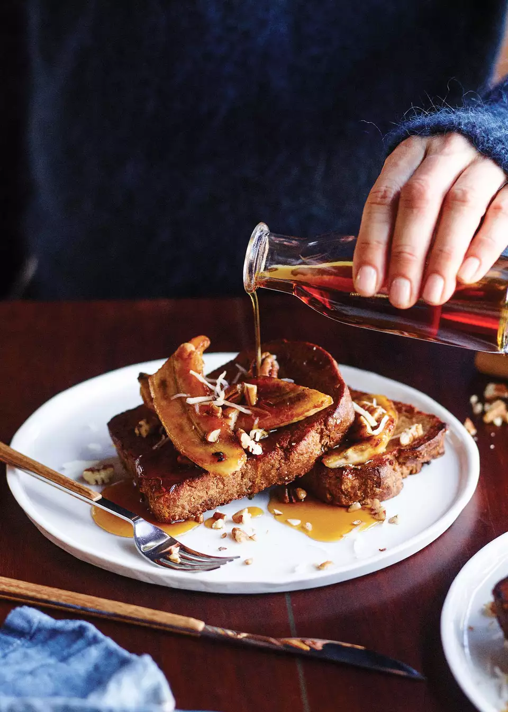

Amazing vegan and gluten-free French toast! Made with almond milk,
pureed banana, and chia seeds.
Serve with easy caramelized bananas and maple syrup!

Ingredients
For the French toast:
1 cup (240ml) unsweetened almond or macadamia milk (strained if homemade)
1 ripe medium banana
2 tablespoons pure maple syrup, plus more to serve
1 teaspoon natural vanilla extract
1 tablespoon white (or black) chia seeds
1 teaspoon ground cinnamon
1⁄4 teaspoon natural salt
8 slices gluten-free sandwich bread
1⁄4 cup (60ml) coconut oil (in liquid form), plus more as needed
For the caramelized bananas:
2 medium bananas, thickly sliced on the diagonal
1⁄4 cup (37g) coconut sugar
1 to 2 tablespoons coconut oil (in liquid form)
Pure maple syrup, to serve
Optional boosters:
1⁄4 cup (60ml) bourbon or rum
2 tablespoons crushed raw pecans or walnuts
1 tablespoon unsweetened dried shredded coconut
Method
Set the oven to its lowest temperature or the “warm” setting
Make the French toast batter:
Combine the milk, banana, maple syrup, vanilla, chia seeds,
cinnamon, and salt into your blender and blast on high for about 30 seconds,
until well combined. Pour the mixture into a large shallow baking dish and let
rest for about 5 minutes to thicken slightly.
Soak the bread in the batter:
In batches, place slices of the bread in the baking dish and let soak on one side for 8 to 10 seconds.
Flip the slices and let soak for another 8 to 10 seconds, until evenly moistened.
Cook the French toast:
In a medium skillet (that fits two slices of bread)
or on a large griddle (that holds all of the slices) over medium heat,
warm 1 to 2 tablespoons of coconut oil per two slices of bread.
(Resist the urge to use less coconut oil, or the bread won’t get crispy.)
Add the bread and fry for 4 to 6 minutes on each side,
until golden brown and crispy on the edges;
you may need to add more coconut oil after you flip the bread.
If cooking in batches, transfer the French toast to a lined baking sheet and place in the oven to keep warm,
and repeat to fry the remaining bread, adding more coconut oil to cook each batch.
While the last pieces of toast are cooking, make the caramelized bananas:
Combine the banana slices and the coconut sugar in a zipper-lock bag, seal,
and shake to coat evenly. In a skillet over medium-high heat, warm the coconut oil,
add the coated bananas and the bourbon booster (if using),
and fry for about 2 minutes on each side until nicely caramelized.
To serve:
Serve two slices of French toast on each plate,
topped with one-quarter of the caramelized bananas,
one-quarter of the crushed nut boosters, and one-quarter of the coconut booster.
Pass maple syrup at the table.